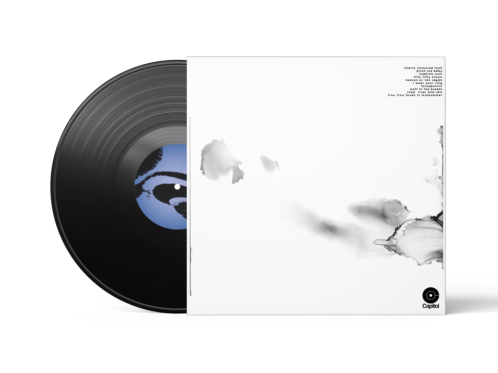
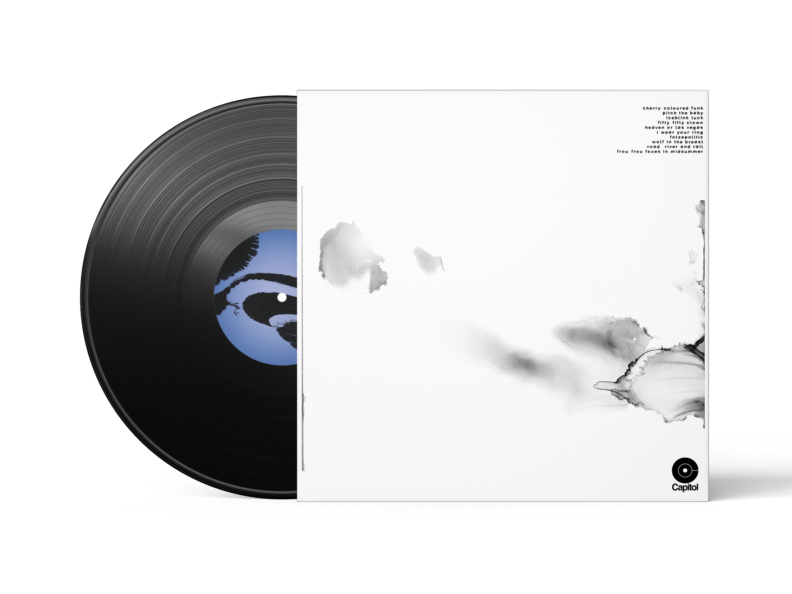
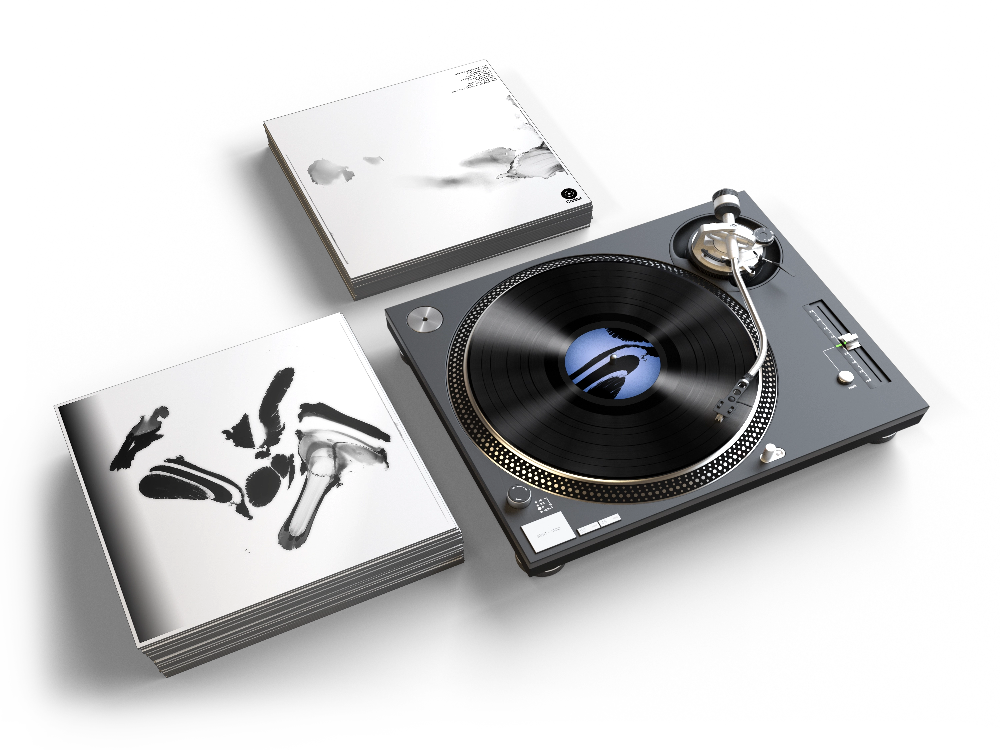
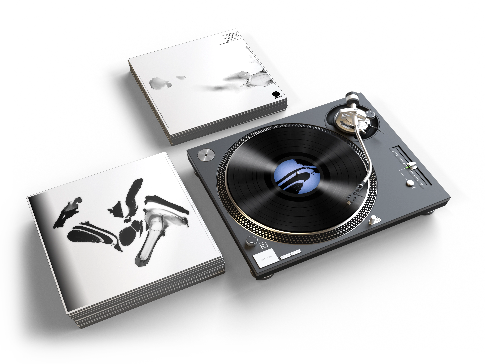

Heaven or Las Vegas
Visual Identity
Concept for front and back covers, inner sleeve, and label designs for Heaven or Las Vegas, Cocteau Twin's 1990 studio album.
The main visuals are crafted using calligraphy and alcohol inks. The resulting fluid, organic forms echo the immersive, dreamlike qualities of Heaven or Las Vegas' sound. The motion of the ink is hazy and unpredictable, capturing the record's layered sonic landscape, its sense of movement, weightlessness and nostalgia.

 

 
